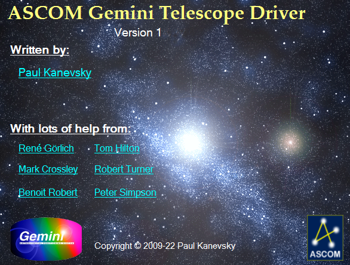

|  | Download Gemini.NET ASCOM Driver |
| Gemini.NET ASCOM driver supports Gemini-I Level 4, Gemini-II Level 5, and Gemini-II Level 6 (beta). Serial, USB, and Ethernet UDP communications are all supported. |
|
Please install ASCOM Platform, first! |
|
Latest Stable Release |
v1.0.84 | Release Notes |
|
Beta-Test (new features) |
v1.1.17 | Release Notes | |
|
Previously Released |
v1.0.75 | Release Notes |
|
|
| Gemini.NET ASCOM driver
was created and is maintained independently from Losmandy-Hollywood General Machining Inc. or any of their
employees or partners. By downloading this driver you agree to use it at your own
risk. For help with the driver or any of its features, please join us on the Gemini_ASCOM_Driver discussion group! For help with ASCOM Platform and ASCOM tools, please visit ASCOM Talk group |